Official Site
kageonraizi
Alternative Guitar Rock Band
Official Site
kageonraizi
Alternative Guitar Rock Band
Information
Profile
2006年に専門学校へ入学した4人で結成。
同年より楽曲制作やイベント参加、
卒業後は地元仙台のみならず、
県外でのライブツアーなど、
精力的に活動を重ねてきた。
2012年に惜しまれつつも解散となったが、2016年には復活ライブを行い、影音雷時の音楽と熱量を観客の心に深く刻み込んだ。
その後も、メンバー同士の繋がりが
途切れることはなかった。
あれから10年ーー。
2026年にエモーショナルな歌声と
圧倒的疾走感で心の葛藤を突く
オルタナティブギターロックバンドが
再び動き出す。
Live
石巻 Blue resistance
詳細は追ってお知らせします。
Open / Start
OPEN ---:--- / START ---:--- (調整中)
Ticket
¥ ----(調整中)
Act
(調整中)
Live限定特典
当日ご来場の方に、先着でステッカー&缶バッジをプレゼント。なくなり次第終了となります。


Members

JAM
Gt / Chorus
ヒロト
Gt / Vo
you
Ba / Chorus
卍
Dr / Chorus
Discography
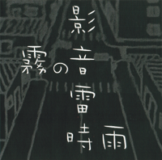
1st Single
霧の音
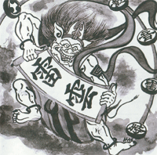
2nd Single
雷雲
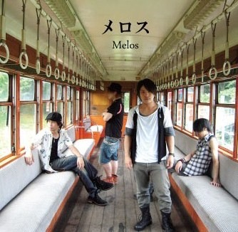
3rd Single
メロス
4th Single
BUZZER BEATER
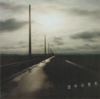
1st Mini Album
途中の景色
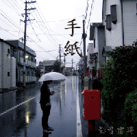
1st Album
手紙
Gallery
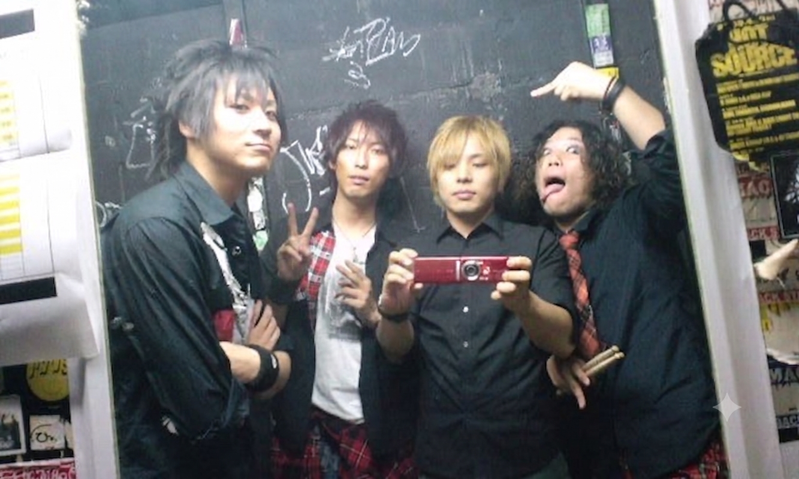
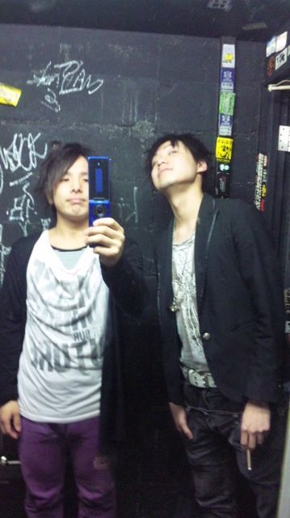
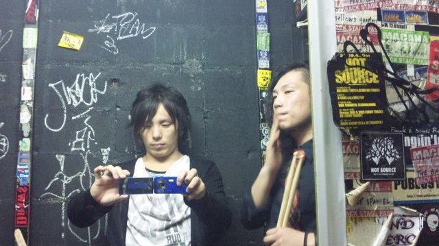
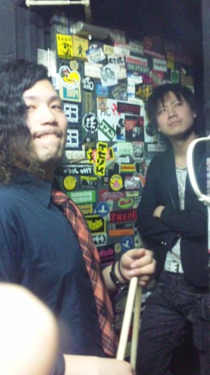


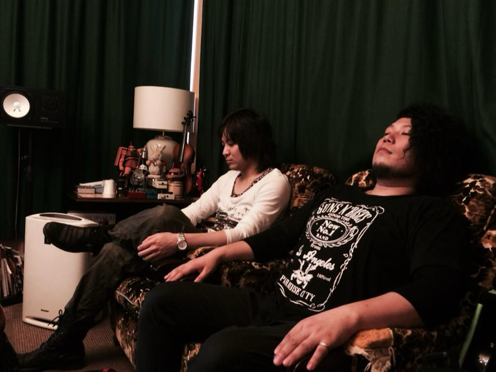
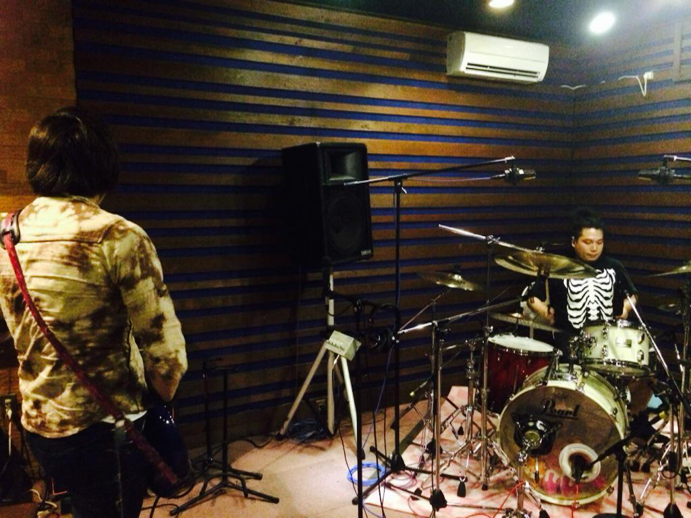
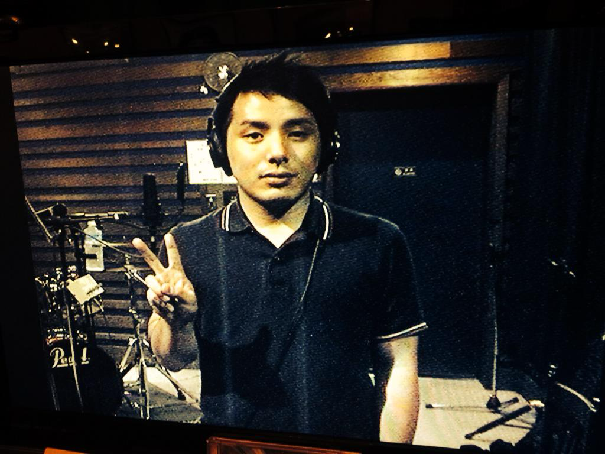
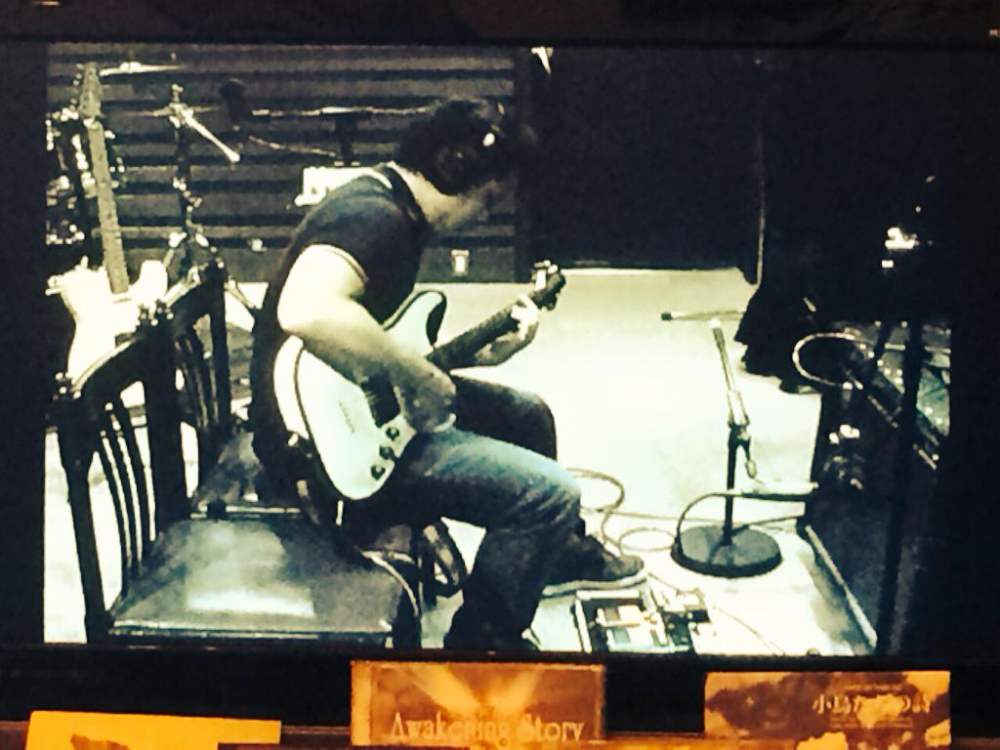
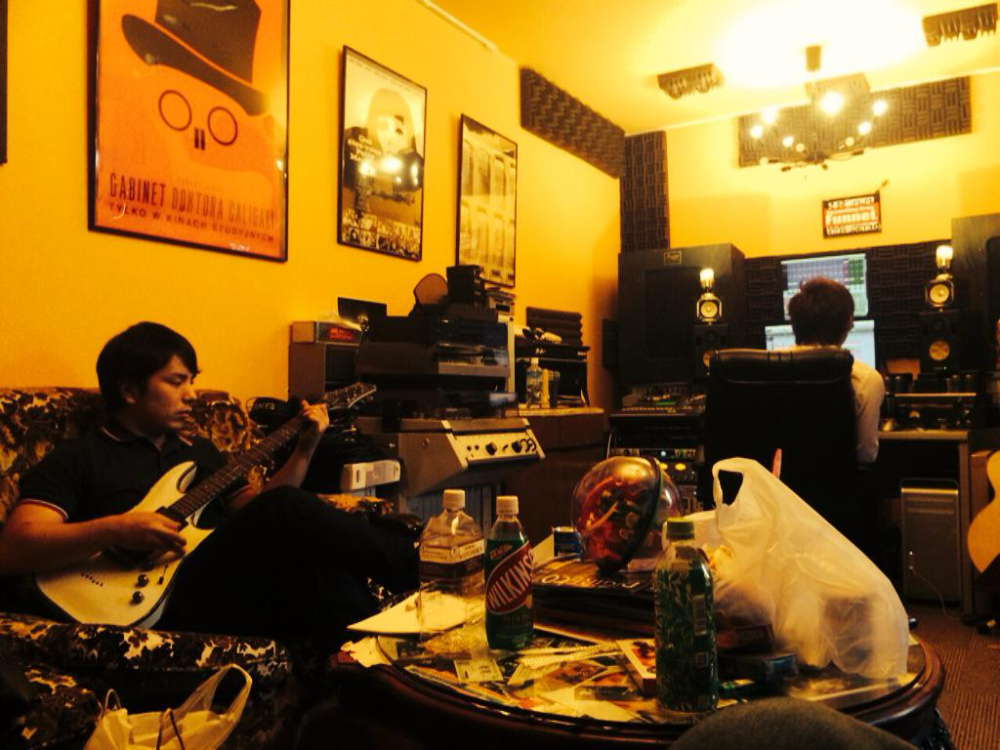
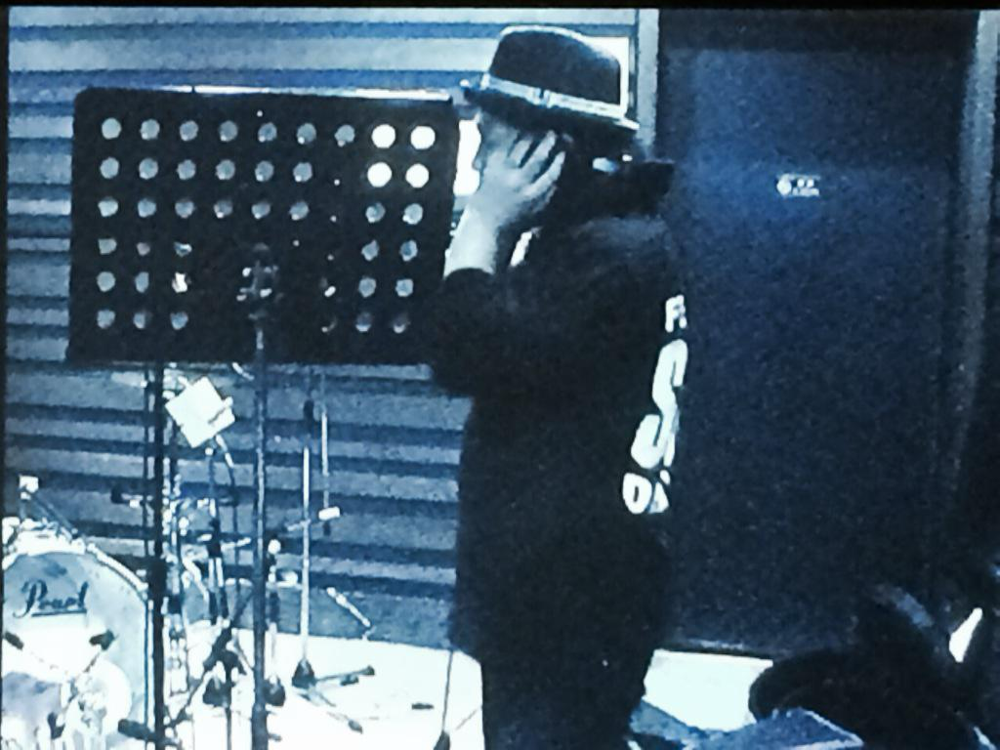
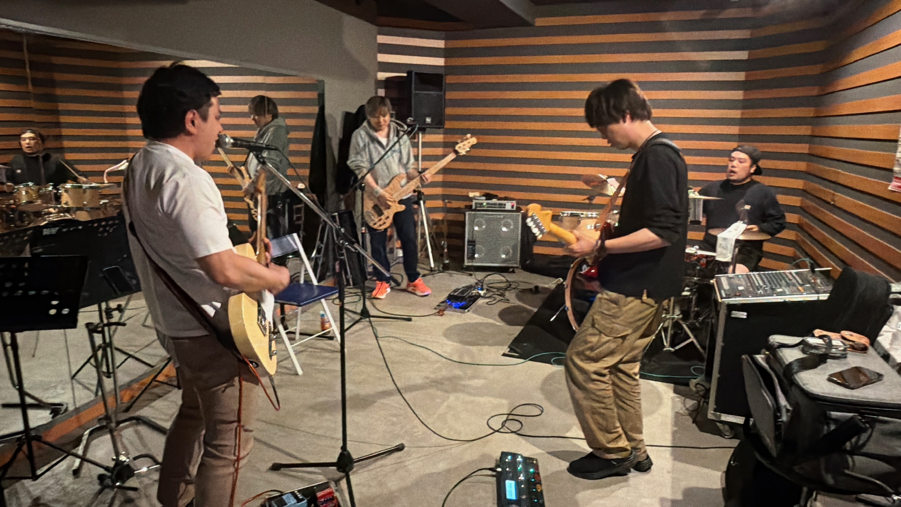